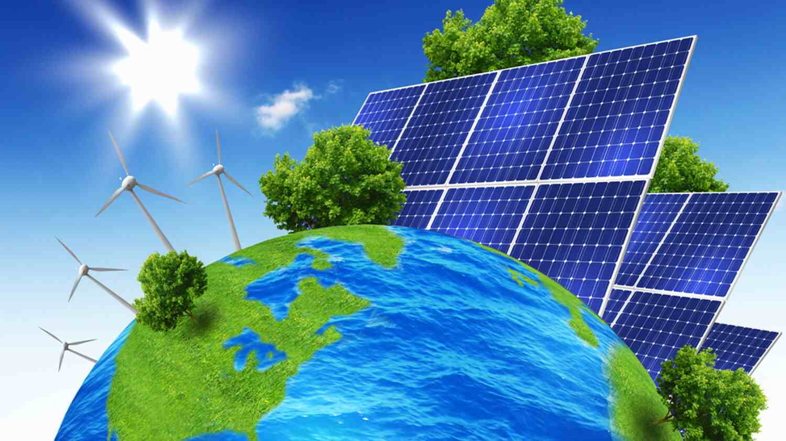
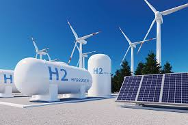
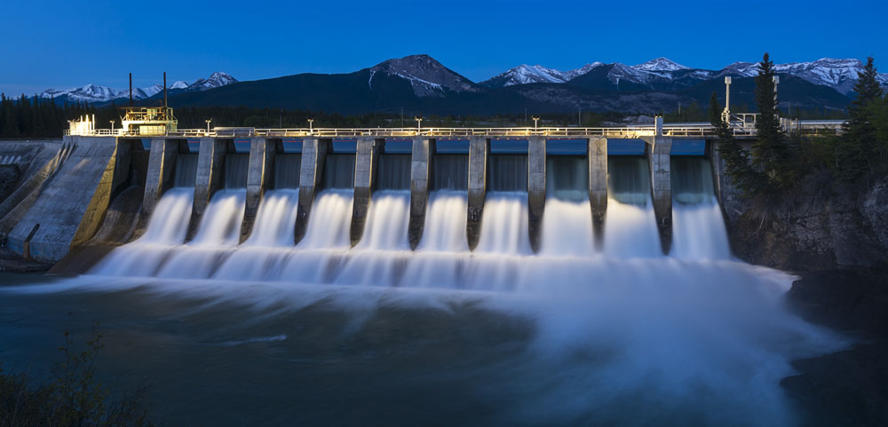
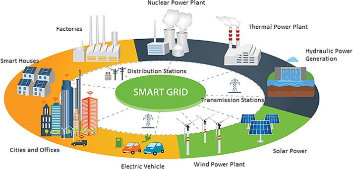

"As the world grapples with climate change and the depletion of fossil fuels, renewable energy has emerged
as
a beacon of hope. This article delves into the latest trends and innovations in the renewable energy sector,
highlighting how they are transforming our energy landscape and paving the way for a sustainable future"
The Rise of Solar Power

Solar power has become increasingly popular due to its accessibility and declining costs.
Innovations in solar technology, such as more efficient photovoltaic cells and solar tracking systems,
are boosting the energy output of solar panels. Furthermore, advancements in battery storage are
addressing the intermittency issues of solar energy, making it a more reliable power source.
Wind Energy: Harnessing the Power of Nature

The Promise of Green Hydrogen

Green hydrogen, produced using renewable energy sources, is being hailed as the future of clean energy. It
has the potential to decarbonize industries that are difficult to electrify, such as steel production and
long-haul transportation. Research and development in electrolyzer technologies are making green hydrogen
production more efficient and cost-effective.
Innovation of Hydro Energy

Innovations in small-scale and micro-hydro systems are providing power to remote areas. Pumped-storage
hydropower, which stores energy by pumping water uphill when demand is low and releasing it to generate
electricity when demand is high, balances intermittent renewable sources.
Energy Storage and Smart Grids

The intermittency of solar and wind energy requires effective energy storage solutions. Lithium-ion
batteries are rapidly decreasing in cost and increasing in capacity, while emerging technologies like
solid-state and flow batteries promise greater performance. Smart grids use digital communication technology
to improve efficiency and reliability, integrating renewable sources and storage systems to better manage
supply and demand.
Policy and Economic Considerations
Government policies and economic incentives are crucial for the renewable energy transition. Subsidies, tax
incentives, and research grants drive down costs and spur innovation. Carbon pricing mechanisms make fossil
fuels more expensive relative to cleaner alternatives. International agreements like the Paris Agreement
push countries to invest in renewable infrastructure, while local renewable energy standards mandate
increased renewable energy use.
Challenges Ahead
Despite progress, challenges remain. Sustainable manufacturing and disposal of renewable technologies are
essential to avoid environmental impacts. Rare earth metals used in clean energy technologies pose
challenges in mining practices and geopolitical dependencies. Integrating renewables into existing grids
requires substantial infrastructure investment and policy changes.
The Promising Future
The future of renewable energy is bright, driven by technological innovation, supportive policies, and
growing public awareness. Collaboration between governments, private sectors, and the global community is
essential to harness the full potential of renewable energy. Embracing clean, abundant energy sources will
pave the way to a more sustainable and resilient future for generations to come.
"SUMMARY:The future of renewable energy is promising, driven by advancements in solar, wind, and hydro
technologies, along with effective energy storage and smart grid integration. Government policies and
economic incentives are crucial in accelerating this transition. However, challenges like sustainable
manufacturing and grid integration remain. With continued innovation and global collaboration, renewable
energy will play a central role in creating a sustainable and resilient future for generations to come."